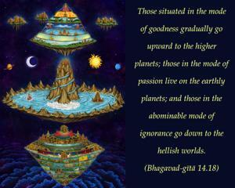
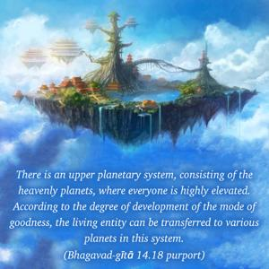
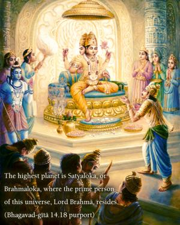
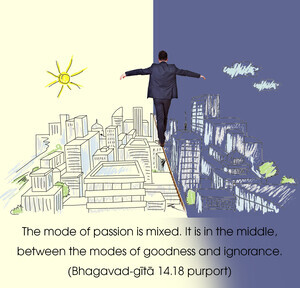

Those situated in the mode of goodness gradually go upward to the higher planets; those in the mode of passion live on the earthly planets; and those in the abominable mode of ignorance go down to the hellish worlds.




In this verse the results of actions in the three modes of nature are more explicitly set forth. There is an upper planetary system, consisting of the heavenly planets, where everyone is highly elevated. According to the degree of development of the mode of goodness, the living entity can be transferred to various planets in this system. The highest planet is Satyaloka, or Brahmaloka, where the prime person of this universe, Lord Brahmā, resides. We have seen already that we can hardly calculate the wondrous condition of life in Brahmaloka, but the highest condition of life, the mode of goodness, can bring us to this.
The mode of passion is mixed. It is in the middle, between the modes of goodness and ignorance. A person is not always pure, but even if he should be purely in the mode of passion, he will simply remain on this earth as a king or a rich man. But because there are mixtures, one can also go down. People on this earth, in the mode of passion or ignorance, cannot forcibly approach the higher planets by machine. In the mode of passion, there is also the chance of becoming mad in the next life.
The lowest quality, the mode of ignorance, is described here as abominable. The result of developing ignorance is very, very risky. It is the lowest quality in material nature. Beneath the human level there are eight million species of life – birds, beasts, reptiles, trees, etc. – and according to the development of the mode of ignorance, people are brought down to these abominable conditions. The word tāmasāḥ is very significant here. Tāmasāḥ indicates those who stay continuously in the mode of ignorance without rising to a higher mode. Their future is very dark.
There is an opportunity for men in the modes of ignorance and passion to be elevated to the mode of goodness, and that system is called Kṛṣṇa consciousness. But one who does not take advantage of this opportunity will certainly continue in the lower modes.